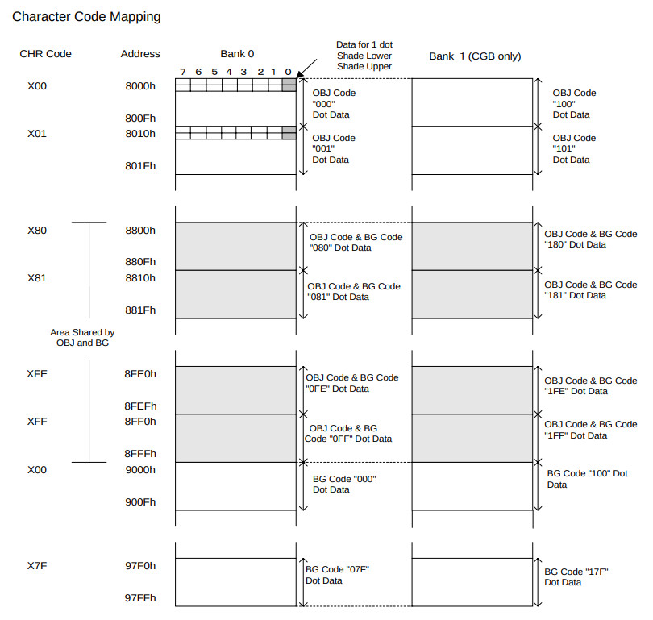
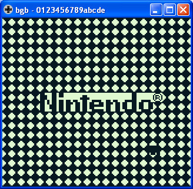
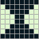

參考資訊：
https://bgb.bircd.org/
https://github.com/gbdev/rgbds
https://github.com/sinamas/gambatte
https://github.com/lancekindle/DMGreport
每個像素使用2bits表示(上下bit)

LCDC equ $ff40
LCDCF_OBJ8 equ %00000000
LCDCF_OBJON equ %00000010
IE equ $ffff
IEF_VBLANK equ %00000001
section "vblank", rom0[$0040]
reti
section "lcdc", rom0[$0048]
reti
section "timer", rom0[$0050]
reti
section "serial", rom0[$0058]
reti
section "joypad", rom0[$0060]
reti
section "entry", rom0[$0100]
nop
jp _start
section "header", rom0[$0104]
db $ce, $ed, $66, $66, $cc, $0d, $00, $0b, $03, $73, $00, $83, $00, $0c, $00, $0d
db $00, $08, $11, $1f, $88, $89, $00, $0e, $dc, $cc, $6e, $e6, $dd, $dd, $d9, $99
db $bb, $bb, $67, $63, $6e, $0e, $ec, $cc, $dd, $dc, $99, $9f, $bb, $b9, $33, $3e
db "0123456789abcde"
db 0
db 0, 0
db 0
db 0
db 0
db 0
db 1
db $33
db 0
db 0
dw 0
_start:
di
ld sp, $ffff
ld a, IEF_VBLANK
ld [IE], a
ei
halt
halt
ld a, [LCDC]
or LCDCF_OBJON
or LCDCF_OBJ8
ld [LCDC], a
ld d, 16
ld bc, tile
ld hl, $8000
copy_tile:
ld a, [bc]
ld [hl+], a
inc bc
dec d
jr nz, copy_tile
jp @
tile:
db %11111111
db %11111111
db %01111110
db %01111110
db %00111100
db %00111100
db %00011000
db %00011000
db %00011000
db %00011000
db %00111100
db %00111100
db %01111110
db %01111110
db %11111111
db %11111111
每個像素使用2bits表示(上下bit)，因此，一個8x8的CHR需要複製16Bytes
完成

